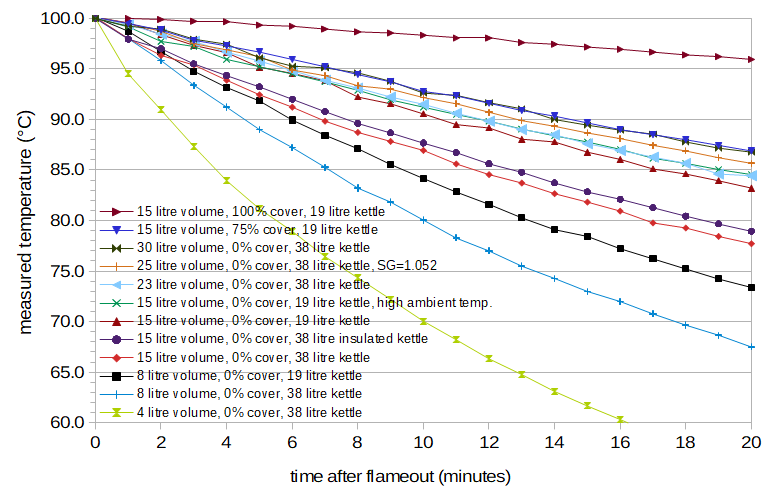
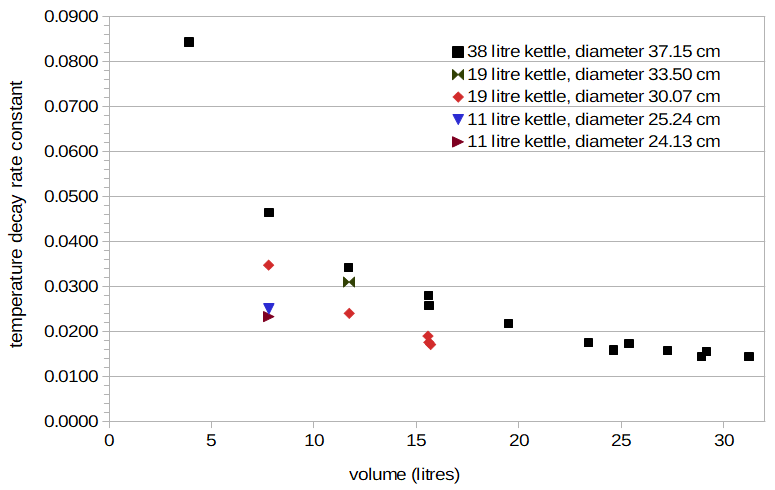
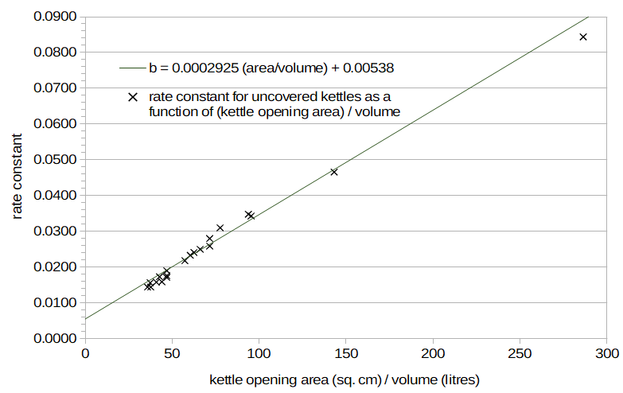
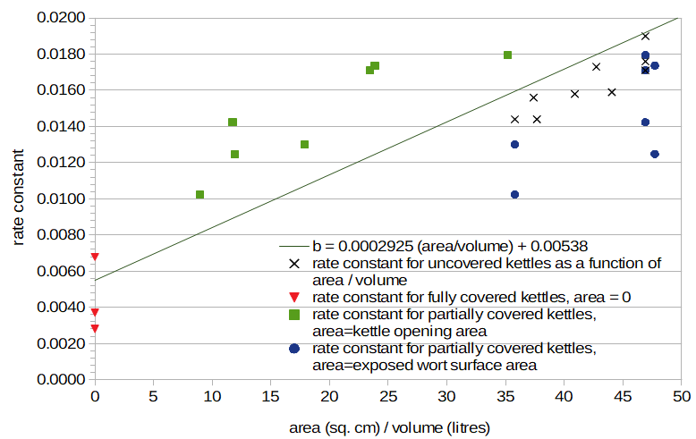

Predicting Wort Temperature After Flameout
Abstract
In a previous post, I described a method for estimating IBUs that are produced in hot wort after flameout. This method relies on both (a) relative utilization as a function of temperature, described elsewhere, and (b) a function that describes the decrease in wort temperature after flameout (but before "forced cooling" with a wort chiller). In this blog post, I describe temperature data collected under a variety of conditions and the resulting formula for predicting the temperature of wort as it naturally cools after flameout. The data suggest that this rate of natural cooling is primarily influenced by (a) the release of steam, which is in turn influenced by the wort volume, surface area of wort exposed to air, and size of the opening in the kettle through which steam can escape, and (b) radiation of heat from the kettle. Other factors, such as ambient temperature, are of much lesser significance. The resulting formula, for homebrew-scale batch sizes, is T = 53.70 × exp(-b × t) + 319.55, where b = (0.0002925 × effectiveArea / volume) + .00538 and effectiveArea = (surfaceArea × openingArea)0.5. The parameter T is temperature (in degrees Kelvin), t is time after flameout (in minutes), b is the rate constant that describes how quickly the temperature decreases, effectiveArea is the "effective" area through which steam ventilates, surfaceArea is the surface area of wort exposed to air (in square centimeters), openingArea is the area of the opening in the kettle (in square centimeters), and volume is the wort volume (in litres).
1. Motivation
The motivation for the work described here was to predict the temperature decrease of wort after flameout, in order to facilitate computation of the mIBU method of predicting IBUs for homebrew-scale batch sizes.
If one thinks about the various factors that might influence this temperature decrease, many things may come to mind:
- The wort volume, with larger volumes potentially cooling more slowly,
- The size or surface area of the kettle (which may be much larger than the wort volume), with larger kettles potentially radiating more heat than smaller kettles,
- The size of the opening in the kettle (with potentially slower cooling for a smaller opening that traps more heat),
- The ambient or room temperature (with wort potentially cooling faster if the room temperature is 10°C (50°F) as opposed to 30°C (86°F)),
- The relative humidity (with wort potentially cooling faster in drier conditions),
- The specific gravity of the wort (with higher specific gravities potentially cooling differently from water),
- The removal of the kettle from the heat source (with potentially slower cooling if the kettle remains on a still-hot burner),
- The kettle material (with materials such as aluminum potentially cooling faster than materials such as stainless steel), and
- Whether the kettle is insulated or not (with potentially slower cooling for an insulated kettle).
In order to investigate these possibilities, I tested these factors with either wort or (for simplicity) water, plotted the results, and determined which factors have the greatest impact on the rate of temperature change. With this information, I then constructed a formula for predicting wort temperature after flameout as a function of time. This function can be used directly in the mIBU method.
2. Data
I measured the decrease in temperature after boiling for 33 conditions in order to test the various factors listed above; these conditions are listed in Table 1 at the very bottom of this post. (I did not control for ambient temperature and relative humidity separately; generally, a lower ambient temperature was correlated with a higher relative humidity.) I measured the temperature of wort or water after flameout in 22 conditions with the kettle uncovered, and additional 11 conditions with the kettle partially or fully covered. I used wort in 5 cases and water in 28 cases. I used a Thermapen Mk4 for measuring temperature in all cases except condition AG, in which I used a TelTru analog thermometer with a 30 cm (12") probe. I took measurements at 1-minute intervals for the first 15 or 20 minutes after flameout. (Measurements were taken for only 15 minutes for three conditions: T, U, and V.) For the conditions using water, I measured volume to the nearest 30 ml (1 ounce) using a "Legacy Pro" 4000-ml (128-oz) graduated pitcher (which looks identical to the US Plastics Corp. Accu-Pour™ PP Measuring Pitcher), recorded the temperature of each addition, and normalized from this volume and temperature to the volume at boiling using Equation 3 in "ITS-90 Density of Water Formulation for Volumetric Standards Calibration" (Jones and Harris, Journal of Research of the National Institute of Standards and Technology, vol 97, no. 3, pp. 335-340 (1992)). For the conditions using wort, I estimated the volume at close to boiling using a measuring stick or the difference between pre- and post-boil specific gravity. Twelve of the more interesting conditions are plotted in Figure 1, with time on the horizontal axis and temperature (in degrees Celsius) on the vertical axis.
I will mostly use metric units throughout this blog post in order to simplify the presentation, with apologies to readers in the United States. The final formula uses degrees Kelvin.
 Figure 1. Temperature (in degrees Celsius) as a function of time (in minutes) for twelve of the 33 conditions. The legend for each condition specifies the volume of liquid (water or wort, in litres), the amount by which the kettle was covered (in percent; 0% = uncovered and 100% = completely covered), the size of the kettle (in litres), and any other details about the condition, such as ambient temperature or insulation. Only one of the conditions in this plot used wort (specific gravity 1.052); the other cases here used water.
3. Parameter Estimation
3.1 Exponential Decay
It can be seen that all of the data in Figure 1 can have a good fit to a function with exponential decay. Those conditions not plotted in Figure 1 also show a similar goodness of fit to an exponential decay function. (For many of the cases, a straight line also seems to be a good fit, but the exponential decay function can model nearly-straight lines as well as curved lines of the type seen here.) An exponential decay function is of the general form a × exp(-b×t) + c, where t is (in this case) time, a, b, and c are parameters that describe the shape of the function, and exp(x) indicates the constant "e" to the power of x, or 2.71828x. In this case, the parameter b is called the rate constant, and it describes how quickly the function (or temperature) decreases. (I like using fooplot to visualize different functions and parameter values; one can enter something like "54*exp(-0.03x)+46" on this page to see a representative exponential decay function, setting the graph lower limits to 0, the x-axis upper limit to 50, and the y-axis upper limit to 100.) The liquid was at boiling in all cases at time 0, with an average measured temperature over all conditions of 100.1°C. (The expected boiling point of water at my elevation (76 meters above sea level) is 99.7°C. However, the boiling point of wort is higher than that of water, so the average boiling point over all conditions (with 5 of the 33 cases using wort) was higher than 99.7°C. The difference of less than 0.4°C is within the specified accuracy of my Thermapen, which is ±0.4°C.) If t = 0, then exp(-b×t) is 1 for any value of b, and so a + c must equal 100.1.
In order to simplify the parameter estimation, I searched over conditions A through V (those conditions in which the kettle is uncovered) minimizing the root-mean-square (RMS) error to find the best value of b in each case and the values of a and c that were the best over all conditions. (In other words, a and c were optimized to have the same value over all conditions, whereas b was optimized per condition.) If the total RMS error over all conditions is small with constant values of a and c, then the different shapes of each curve can be described well with a single parameter, b.
The search for a and c yielded a=53.70°C and c=46.40°C with an overall RMS error of 0.31°C. The maximum RMS error was 0.64°C for condition O. The small RMS error over all conditions indicates that we can, in fact, describe the different rates of temperature decay of these conditions with a single parameter, the rate constant b. The question then becomes whether we can predict b from the various factors in each condition, and if so, if certain factors are more important than others in predicting b. (It's also worth noting that the optimal value of c in this case is not room temperature. Presumably, if time were measured in hours instead of minutes, the values of a and c would have turned out differently, with c at around room temperature. Or, there are other factors involved at longer time scales that don't fit well to a simple exponential decay function.)
3.2 Predicting the Rate Constant for Uncovered Kettles
Figure 2 plots the values of b that minimize the RMS error in each uncovered-kettle condition with a=53.70°C and c=46.40°C. The horizontal axis is the volume of wort or water, and the vertical axis is the value of b. A few clear patterns emerge: the data obtained from a single kettle are grouped in a curved line with negative slope (for the two cases where there are multiple data points per kettle), and these curves (representing different kettles) are separated from each other by possibly constant scaling factors. The curved line with negative slope for the 38-litre kettle looks like a function of the form 1/x, where x in this case is volume. This suggests that b can be approximated as a function of scaling/volume, where scaling is some (still unknown) property of the kettle and volume is the wort volume (in litres).
 Figure 2. Temperature-decay rate constants for all conditions with uncovered kettles, plotted as a function of wort volume. Each group (e.g. black squares or red diamonds) is for a different kettle (and kettle diameter).
After considering various possibilities for the factor called scaling, the area of the kettle opening (πr2), which equals the surface area of wort exposed to the air, shows a good fit to this set of data. The black "×" marks in Figure 3 plot the values of area/volume on the horizontal axis for the uncovered kettle (where area is the area of the kettle opening (or πr2, where r is the radius of the kettle) in square centimeters, and volume is the volume of liquid, in litres) and values of the rate constant b on the vertical axis. The approximately straight line of black × marks in Figure 3 is interesting. It implies that the rate of temperature decay, represented by the parameter b, can be predicted quite well from only the area of the kettle opening and the volume of liquid. The value of b when the area is zero implies a rate of cooling caused by heat radiated from the kettle (with an entirely closed system), and the slope of the line implies faster cooling as more steam escapes the kettle with greater wort surface area. In other words, if b is modeled as a straight line of the form b = slope × (area / volume) + offset, where slope is the slope of the line and offset is the value when area = 0, then offset represents the temperature decay due to heat radiated from the kettle, and slope represents the temperature decay caused by the loss of heat in the steam. In this case, a good fit can be seen for the line b = 0.0002925 × (area / volume) + 0.00538.
 Figure 3. Temperature-decay rate constant as a function of (kettle opening area) divided by volume, for uncovered kettles. In this case, the kettle opening area equals the area of wort exposed to air.
3.3 The Rate Constant for (Partially) Covered Kettles
I then plotted the values of b for those cases in which the kettle is partially or completely covered, as shown in Figure 4 (with much lower limits on the X and Y axes of this graph). The cases in which the kettle is completely covered cluster somewhat around the predicted value of b when the area is zero. Larger kettles and volumes have smaller values of b, implying less radiated heat loss from larger kettles and/or volumes. Conditions Z and AG are nearly identical except for the size of the kettle; Z used 15.4 litres of water in a covered 18.9 litre kettle, and AG used 15.6 litres of water in a covered 37.9 litre kettle. The temperature after 20 minutes was very close in both conditions, and the estimated value of b is nearly the same in both cases (0.00371 vs 0.00373). Therefore, it seems that the size of the kettle has very little impact on the rate of temperature decay through radiated heat, but the volume of liquid does have an impact on radiated heat.
Again looking at Figure 4, the conditions in which the kettle is only partially covered deviate from the predicted line, regardless of whether area (the horizontal axis) is (a) the exposed wort surface area (blue circles) or (b) the kettle opening area (green squares). The predicted line lies somewhere between these two extremes. This suggests that if the kettle is partially covered, the amount of steam produced is (still) roughly proportional to the surface area of the wort exposed to air (i.e. the area of the fully-open kettle), but that this steam is not able to escape quite as quickly, leaving more heat trapped in the kettle. (For an uncovered kettle, the area of the opening in the kettle and the surface area of wort exposed to air are the same.)
One possibility is that the rate of heat loss is proportional to the geometric average of the wort surface area and the opening area. We can call this the "effective area," i.e. effectiveArea = (surfaceArea × openingArea)0.5, where surfaceArea is the wort surface area, openingArea is the area of the kettle opening, and (x)0.5 indicates the square root of x. In this case, when the area of the opening is zero (for a covered kettle), the effective area is also zero. When the area of the opening equals the surface area of the wort, the effective area is the same as the surface area of the wort. When we plot effectiveArea / volume on the horizontal axis and b on the vertical axis in Figure 5, we observe that the data from the partially-covered conditions are much closer to the straight line, allowing us to predict temperature decay fairly well with a small number of parameters.
 Figure 4. Rate constants for uncovered kettles (black "×" marks), fully-covered kettles with area = 0 (red triangles), partially-covered kettles with area = area of kettle opening (green squares), and (the same) partially-covered kettles with area = wort surface area (blue circles). The line with the best fit to uncovered-kettle data is also plotted.
 Figure 5. Rate constants for uncovered kettles (black "×" marks), partially covered kettles (dark red diamonds), and fully covered kettles (light red triangles), plotted as a function of "effective area". Effective area is the geometric mean of the exposed wort surface area and kettle opening area.
Figure 5. Rate constants for uncovered kettles (black "×" marks), partially covered kettles (dark red diamonds), and fully covered kettles (light red triangles), plotted as a function of "effective area". Effective area is the geometric mean of the exposed wort surface area and kettle opening area.
4. Model Accuracy
4.1 Looking at Factors Potentially Influencing Temperature
In the model we have developed, we can predict temperature after flameout using three parameters: wort volume, kettle diameter (to compute exposed wort surface area), and kettle opening diameter (to compute the area of the opening). Other factors, such as ambient temperature and specific gravity, have a fairly small deviation from the predicted line, indicating that these factors have only a minor impact on the decrease in temperature. For example, in Figures 3, 4, and 5 there are two rate constants that have the same area/volume value of 46.9 cm2. (This is most easily seen in the two "×" marks at area/volume=46.9 on the right-hand side of Figure 4.) The one just below the predicted line, with a value of 0.0190, was from Condition C with water from an uncovered 19-litre kettle and an ambient temperature of 12°C (53°F). This case has a predicted temperature of 86.9°C after 15 minutes, which is very close to the measured temperature of 86.8°C. The one even lower than the predicted line, with a value of 0.0176, was obtained under the same conditions except with an ambient temperature of 33°C (91°F), Condition J. This case has the same predicted temperature of 86.9°C, but a measured temperature of 87.8°C after 15 minutes. From this, we can conclude that ambient temperature does have an effect on the rate of temperature decrease, with warmer ambient temperatures yielding a slower decrease in temperature. However, this effect is minor, with a large difference in ambient temperatures (21°C (38°F)) yielding a small difference of 1.0°C (1.8°F) after 15 minutes. (I also learned that brewing in very hot climates would not be very pleasant for me. I respect anyone with the dedication to brew when the temperature is above 30°C (86°F).)
Over all conditions, the average absolute difference in temperature at 15 minutes between measured and modeled temperatures is 0.8°C. The largest difference at 15 minutes, 1.9°C, is for Condition AE, which has a large volume in an entirely closed kettle.
4.2 Factors Potentially Influencing Temperature
In general, we can look at the difference in measured temperatures at 15 minutes between two conditions when only one factor is different between the conditions. A factor with a larger difference can be considered more important in influencing temperature decay than a factor with a smaller difference. (The value of 15 minutes is somewhat arbitrary but I think not unreasonable. It is the largest time point for which I have measured data in all conditions.) One issue with this metric is that smaller volumes will generally have greater temperature differences over time than larger volumes. In addition, the diameter of the kettle and area of the kettle opening will have an impact on the magnitude of the measured temperatures. In order to normalize for these factors, one could look at the difference divided by the temperature of one of the conditions, but this relative error is less intuitive. I'm not aware of an intuitive error metric that addresses the dependence on volume and kettle characteristics, so I'll simply report the measurement difference as well as the volume. Unless otherwise indicated, the kettle diameter and area of the kettle opening are the same within each comparison.
As discussed in the previous section, a high ambient temperature can have a measured temperature difference after 15 minutes of 1.0°C at 15.6 litres. Removing the kettle from the hot metal burner yields a measured difference of -0.8°C at 25 litres. A stainless steel kettle (instead of an aluminum kettle) yields a measured difference of 1.0°C at 7.8 litres. The enamel kettle yields a measured difference of -3.3°C at 11.7 litres, but the two kettles have different exposed surface areas (75.2 cm2 for enamel, 60.6 cm2 for aluminum), and so this difference may appear larger than it is, even after accounting for volume. (The predicted difference in temperature for the enamel kettle is -1.4°C). An insulated kettle yields a measured difference of 1.0°C at 15.6 litres. (The insulation in this case was a combination of closed-cell foam insulation and mylar wrap, around and over the aluminum kettle.) As noted earlier for covered kettles, larger volumes have slower temperature decay than smaller volumes, with a measured difference of 0.7°C for 31.2 litres compared with 15.6 litres.
To compare the decrease in temperature of wort with water, we can compare (a) the temperature of the 24.6-litre wort case (R) with the 27.3-litre water case (M), with a difference in measured temperatures of -0.3°C; (b) the temperature of the same 24.6-litre wort case (R) with the 23.4-litre water case (D), with a difference of 1.1°C; (c) the temperature of the 29.1-litre wort case (T) with the 31.2-litre water case (E), with a difference of 0.2°C; and (d) the temperature of the 28.9-litre wort case (U) with the 31.2-litre water case (E), with a difference of 0.8°C. In short, Condition R has no real difference with the temperature of water, while conditions T and U have a small positive difference that is contrary to the expected small negative difference based on different volumes. The difference between measured and predicted temperatures for conditions R, T, U, and V are 1.5°C, 0.6°C, 1.3°C, and 0.0°C, respectively. Overall there does not seem to be a large difference between the temperature decrease of wort and of water, although the model may predict slightly lower temperatures than are observed.
4.3 Incorporating Additional Factors into the Model
Because the factors described above seem to have at least some impact on the rate of temperature decrease, should we be modeling them in the temperature-decrease formula? The answer to that question depends on our purpose (predicting IBUs) and our tolerance for error. If we have a scenario with fairly typical homebrewing conditions, we can look at how a temperature difference of 3°C after 15 minutes impacts IBUs predicted with the mIBU method. A difference of 3°C at 15 minutes is somewhat arbitrary, and is 1.5 times larger than the largest observed difference in these 33 conditions, but might be observed with a combination of factors different from those factors used to develop the formula. Given a post-boil volume of 19.9 litres (5.25 gallons) in an uncovered kettle with diameter 36.8 cm (14.5 inches), a single addition of 28.35 g (1.0 oz) of 10% AA hops at flameout, and a 15-minute hop stand, the predicted temperature after 15 minutes with the formula developed in this blog post is 85.55°C (186.0°F), and we predict 9.92 IBUs using the mIBU method. If we change the rate constant from 0.02106 to 0.01614 so that the temperature after 15 minutes is 88.55°C (191.4°F), or 3°C warmer, we then predict 10.87 IBUs, or a difference of 0.95 IBUs. If the temperature decreases by 3°C using a rate constant of 0.02638, we predict 9.06 IBUs, or a difference of -0.86 IBUs. If, instead of a 15-minute whirlpool, we use the same rate constants with a 45-minute whirlpool, we predict 12.48 IBUs when the temperature is 85.55°C after 15 minutes, 14.31 IBUs when the temperature is 88.55°C after 15 minutes, and 10.97 IBUs when the temperature is 83.55°C after 15 minutes, or IBU differences of 1.83 and -1.51 in a 45-minute whirlpool.
Can we tolerate a difference of about 1 to 2 IBUs if our temperature decay model is off by 3°C after 15 minutes? The short answer to that question is "yes," for two reasons. First, it has been reported that people can't detect a difference less than 5 IBUs (e.g. J. Palmer, How to Brew, p. 56). So a prediction error of even 2 IBUs is well below our ability to detect with our taste buds. Second, there are a wide variety of other factors that make IBU prediction so inexact that getting anywhere close to a measured IBU value is cause for celebration. For example, things that are not accounted for in the Tinseth or basic mIBU formulas are: (a) the inherent variability (up to 15 to 20%) in alpha acid levels within a single bale of hops (M. Verzele, and D. De Keukeleire, Chemistry and Analysis of Hop and Beer Bitter Acids, p. 331), (b) the hopping rate, which can have a significant impact on IBUs, (c) wort pH, which can affect IBU losses, (d) wort clarity, (e) krausen deposits or loss, (f) age of the beer, (g) the effect of pellets instead of hop cones, and (h) the age and storage conditions of the hops. Any of these factors alone can yield a difference greater than 2 IBUs, and in combination the net effect is a high degree of uncertainty in predicted IBU values.
In summary, factors such as ambient temperature, kettle size, insulation, kettle material, etc. do have an impact on the rate of temperature decay. However, for our purposes, it does not seem necessary to extend the formula to specifically account for these factors.
5. Summary and Conclusion
The final formula for predicting wort temperature as a function of time after flameout, for homebrew-scale batch sizes, is
T = 53.7 × exp(-b × t) + 319.55
b = (0.0002925 × effectiveArea / volume) + 0.00538
effectiveArea = (surfaceArea × openingArea)0.5
where T is temperature (in degrees Kelvin), t is time after flameout (in minutes), b is the rate constant that describes how quickly the temperature decays, effectiveArea is the "effective" area through which steam ventilates, surfaceArea is the surface area of wort exposed to air (in square centimeters), openingArea is the area of the opening in the kettle (in square centimeters), and volume is the wort volume (in litres). The area values can be easily determined from the diameters of the kettle and the kettle opening.
It is not clear how well this formula will scale up to commercial-size batches. If anyone who has such a system can provide me with the necessary parameter values and temperature measurements, I'll be happy to evaluate the formulas and adjust as necessary. To contact me for this or any other reason, send an e-mail to the name associated with this blog (no spaces or other punctuation) at yahοο.
Appendix: Specifics of Each Condition
This section lists some details about each condition in table form. The volume is either of water or wort; if specific gravity is not specified, water was used. For partially-covered kettles, I constructed cardboard and aluminum-foil "lids" that had openings of 25%, 50%, or 75% of the area of the open kettle. The kettle size is noted using approximate capacity, in litres. Unless otherwise noted, the ambient temperature was approximately 13°C (55°F), and the kettle material was aluminum.
| Condition |
volume (litres)
|
kettle size (litres)
|
wort surface area (cm2)
|
percent of kettle covered |
other notes
|
measured temp. at 15 minutes (°C)
|
predicted temp. at 15 minutes (°C)
|
| A
|
7.8 |
18.9 |
710.33 |
0% |
|
78.4 |
79.6 |
| B |
15.6 |
37.9 |
1083.80 |
0% |
|
81.8 |
82.9 |
| C |
15.6 |
18.9 |
710.33 |
0% |
|
86.8 |
86.9 |
| D |
23.4 |
37.9 |
1083.80 |
0% |
|
87.6 |
86.8 |
| E |
31.2 |
37.9 |
1083.80 |
0% |
|
88.9 |
88.9 |
| F |
7.8 |
11.4 |
457.30 |
0% |
stainless steel kettle |
84.2 |
84.7 |
| G |
7.8 |
11.4 |
500.39 |
0% |
|
83.2 |
83.7 |
| H |
7.8 |
37.9 |
1083.80 |
0% |
|
73.0 |
73.3 |
| I |
15.6 |
18.9 |
710.33 |
0% |
ambient temp. 27°C |
87.8 |
86.9 |
| J |
15.6 |
18.9 |
710.33 |
0% |
ambient temp. 33°C |
87.8 |
86.9 |
| K |
3.9 |
37.9 |
1083.80 |
0% |
|
61.7 |
61.0 |
| L |
11.7 |
37.9 |
1083.80 |
0% |
|
78.6 |
79.4 |
| M |
27.3 |
37.9 |
1083.80 |
0% |
|
89.0 |
88.0 |
| N |
11.7 |
18.9 |
710.33 |
0% |
|
83.9 |
84.4 |
| O |
11.7 |
18.9 |
881.21 |
0% |
enamel kettle |
80.6 |
82.0 |
| P |
19.5 |
37.9 |
1083.80 |
0% |
|
85.2 |
85.2 |
| Q |
15.6 |
37.9 |
1083.80 |
0% |
insulated kettle |
82.8 |
82.9 |
| R |
24.6 |
37.9 |
1083.80 |
0% |
wort (SG=1.052) |
88.7 |
87.2 |
| S |
25.4 |
37.9 |
1083.80 |
0% |
wort (SG=1.052), kettle removed from heat source |
87.8 |
87.5 |
| T |
29.1 |
37.9 |
1083.80 |
0% |
wort (SG=1.042), loose cones |
89.1 |
88.5 |
| U |
28.9 |
37.9 |
1083.80 |
0% |
wort (SG=1.042), pellets |
89.7 |
88.4 |
| V |
4.6 |
18.9 |
710.33 |
0% |
wort (SG=1.065), mIBU Exp.#3 |
71.6 |
71.6 |
| W |
15.4 |
18.9 |
710.33 |
25% |
|
87.3 |
88.0 |
| X |
15.4 |
18.9 |
710.33 |
50% |
|
88.2 |
89.3 |
| Y |
15.5 |
18.9 |
710.33 |
75% |
|
89.7 |
91.2 |
| Z |
15.4 |
18.9 |
710.33 |
100% |
|
97.2 |
95.9 |
| AA |
23.4 |
37.9 |
1083.80 |
50% |
|
87.8 |
89.3 |
| AB |
23.4 |
37.9 |
1083.80 |
75% |
|
90.9 |
91.1 |
| AC |
31.2 |
37.9 |
1083.80 |
50% |
|
90.8 |
90.9 |
| AD |
31.2 |
37.9 |
1083.80 |
75% |
|
92.4 |
92.3 |
| AE |
31.2 |
37.9 |
1083.80 |
100% |
|
97.8 |
95.9 |
| AF |
7.8 |
11.4 |
500.39 |
100% |
|
94.8 |
95.9 |
| AG |
15.6 |
37.9 |
1083.80 |
100% |
|
97.2 |
95.9 |
Table 1. Details about each condition in this blog post.